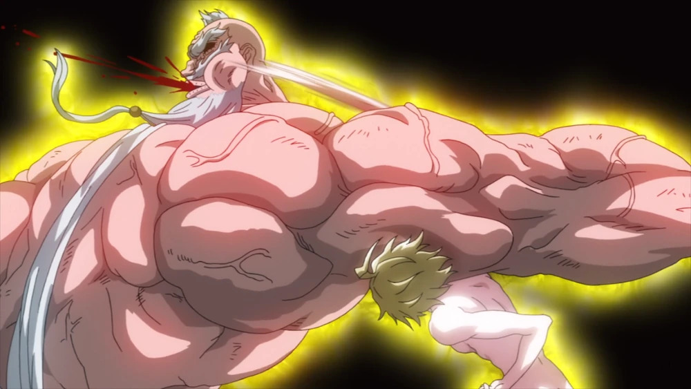

NEXVERSE
Adam didn’t lose because he was weaker. He lost because the story couldn’t afford to let him win.

Let’s be honest. That fight against Zeus? Adam was dominating for most of it.
His ability to copy techniques instantly made him one of the most broken fighters in the entire series. Every move Zeus threw at him… Adam answered back.
Same speed. Same power. Same precision.
At some point, it stopped feeling like a fight… and started feeling like Zeus was the one trying to keep up.
Fatigue.
That’s the explanation the story gives. Adam’s body couldn’t keep up with the strain of constantly copying Zeus’ attacks.
And sure, that makes sense on paper.
But let’s not pretend that’s the whole story.
Because even after his eyes failed… Adam was still standing.
Still fighting.
Still pushing forward purely on instinct.
That wasn’t someone losing a fight. That was someone refusing to go down.
Adam couldn’t win.
Not because he wasn’t strong enough… but because the narrative needed Zeus to win.
Think about it. If Adam wins that fight, the entire balance of the tournament shifts.
The gods lose early dominance. The tension drops. The stakes change.
So the story does what stories sometimes do… it forces an outcome.
Fans aren’t upset just because Adam lost.
They’re upset because it didn’t feel earned.
It felt like he was taken out of a fight he was clearly capable of winning.
And that’s the difference between a good loss… and a frustrating one.
Adam didn’t lose a fair fight.
He lost to the limits of the story itself.
And that’s why, to this day, it still feels like he was robbed.